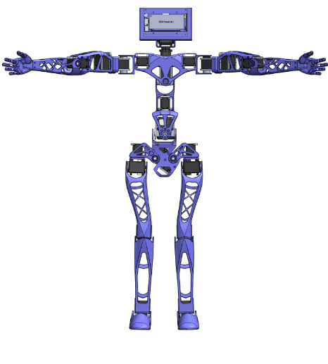
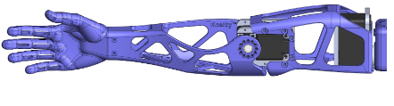
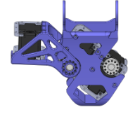
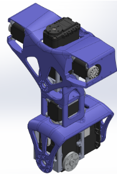
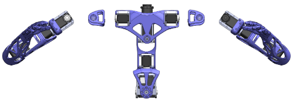
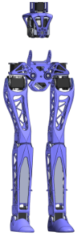

3D Printed Humanoid Robot 🤖
Collaborated on the design and development of an open-source, 3D-printed humanoid robot named Koalby & Ava, focusing on structural improvements, enhanced functionality, and a multidisciplinary approach involving CAD, electrical, and software engineering.
🔍 Project Overview
- Developed new robots, Koalby & Ava, with capabilities such as walking and object manipulation to serve as a lab assistant.
- Incorporated computer-aided design (CAD) tools to model complex geometries and simulate movements and interactions.
- Performed ANSYS simulations to ensure structural durability and optimized design under stress.
- Implemented electrical systems for motor control, sensor integration, and real-time data processing.
- Developed software for controlling movement, object recognition, and task automation.
📐 CAD and ANSYS Analysis
Detailed 3D models were created using CAD software to accurately design each part of the robot, from the arms to the legs. These designs were then subjected to force analysis in ANSYS, where Free Body Diagrams helped identify stress points, allowing for targeted improvements in structural integrity.
- Improved structural integrity by redesigning the pelvis, chest, and spine based on CAD models.
- Performed multivariable torque analysis for motor standardization, ensuring optimal performance under various load conditions.






🔌 Electrical Engineering
The electrical systems for both the robots included the integration of sensors, actuators, and power systems essential for precise control and feedback. Each component was carefully selected to ensure compatibility, durability, and efficiency.
- Designed a power distribution system capable of handling increased motor requirements and sensor data processing.
- Integrated an IMU sensor in the feet to capture real-time balance data, crucial for stability in dynamic movements.
- Installed a Huskylens camera and LiDAR on the head and chest for object recognition and obstacle detection, enhancing interaction with the environment.
- Optimized wiring and connections for reliability and ease of maintenance.
💻 Software Engineering
The software development for the robots focused on creating algorithms for navigation, object detection, and task automation. The programming ensured that they could interact with its environment and adapt to changes dynamically.
- Developed algorithms for autonomous walking and object manipulation using data from the IMU, camera, and LiDAR sensors.
- Utilized control systems to manage motor synchronization, ensuring smooth and stable movement across complex terrains.
- Implemented data processing and decision-making logic, enabling them to perform tasks like object picking and dynamic stabilization.
- Provided a user-friendly interface for monitoring and adjusting parameters in real time, facilitating hands-on control and experimentation.
Project Report
Project Presentation
🎓 Conclusion
The development of Koalby & Ava, the 3D-printed humanoid robots, provided hands-on experience in CAD modeling, ANSYS analysis, electrical systems, and software engineering. This project demonstrates the effective application of advanced design, electrical, and programming skills to create a durable and functional humanoid robot for real-world applications.